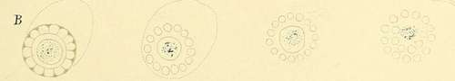
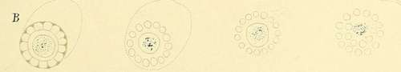

Special Characteristics Of The Individual Species Of Parasites. . Part 3
Description
This section is from the book "Malaria, Influenza And Dengue", by Julius Mennaberg and O. Leichtenstern. Also available from Amazon: Malaria, influenza and dengue.
Special Characteristics Of The Individual Species Of Parasites. . Part 3
Simultaneously changes are occurring in the infected red blood corpuscles. These lose in color, look pale in comparison with the non infected ones, and often increase in size.
Description Of Plate V
A, Figs. 1 to 22. Stages of development of the tertian parasite
(Figs. 17 and 18, after Thayer and Hewetson). Figs. 23 to 29. Hydropic degenerated malarial bodies.
B. Schematic sporulation of the tertian parasite (after Golgi).
PLATE V.

 
Sporulation takes place after a life cycle of about forty eight hours. At this time the organism has lost its motility, is almost or quite the size of a normal blood corpuscle, its host is enlarged and almost completely decolorized; and the swarming of the pigment is suspended. According to Golgi, segmentation may occur in three ways:
The most common form, confirmed by all observers and which I have often seen, is as follows: While the pigment concentrates itself in the center of the organism in a thick clump, the plasma of the parasite breaks up into 15 to 20 round, strongly refractive small spheres (spores). These sometimes arrange themselves regularly in two concentric rows,-Golgi's "sun flower,"-but usually irregularly, recalling rather the appearance of a grape or a mulberry. Yet observing them, as we do, spread out between slides, it is not impossible that the original regular form may have been destroyed by the mechanical violence which can never be entirely avoided in making the preparation, especially since the bodies are loosely attached to one another as a result of the breaking up into spores.
The spores of the tertian parasite are round and smaller than those of the quartan. In the recent condition no structural details are usually visible, though now and then a glistening kernel, the nucleolus, is seen.
We will pass over Golgi's other two methods of segmentation, since it is likely that they are only phenomena of degeneration.
Yet it may be worth while mentioning a not infrequent form of sporulation to which Celli and Guarnieri called attention. In this segmentation takes place without concentration of the pigment, or with the pigment concentrated in two heaps instead of one.
The most characteristic feature in the sporulation of the tertian parasite is the large number (15 to 20) of small round spores. After the spores have broken away from one another, the pigment becomes the prey of the leukocytes.
As in quartan, so also in tertian, fever the act of sporulation corresponds to the paroxysm of fever. So, too, about three hours before the commencement of the chill, a gradual rise in temperature occurs, and, corresponding to it, isolated organisms in the act of sporulation are found in the blood; though, naturally, they are most numerous at the time of the chill or the beginning of the hot stage.
Still it must not be forgotten that sporulation forms may be sought in vain in the blood of tertian fever, on account of the last stages of development occurring in the internal organs. We will meet this peculiarity in a marked degree in the parasites of the second group.
Moreover, now and then an isolated sporulation form is found at a time quite remote from a paroxysm. In this case it is possible that there is in the blood a second feebler generation which sporu lates at another time, but in too small numbers to cause a paroxysm.*
Again, not all the sporulation forms of the tertian parasites present the typical picture which Golgi traced out for them, but deviations from the normal occur, which we should be able to recognize. For instance, it not rarely happens that the organisms sporulate at a time when they take up only a small portion of the red blood corpuscle (see also Anticipating Tertian). They then form a considerably smaller number of spores and resemble the sporulation forms of the pigmented quotidian parasites, from which they are differentiated by the greater amount of pigment and the larger size of the individual spores. In these cases the general blood picture is important.
The microscopic finding in a simple tertian is about as follows:
One to twelve hours after the paroxysm: Very small, slightly pigmented forms, showing active ameboid movement, attached to or partly within the red blood corpuscle.
Twelve to tAventy four hours after the paroxysm: Somewhat larger forms, still actively ameboid, containing very fine pigment dust and filling about one third of the blood corpuscle. The infected corpuscles are pale and enlarged.
Twenty four to thirty six hours after the paroxysm (tAventy four to twelve hours before the subsequent paroxysm): The organisms fill two thirds to four fifths of the pale, enlarged blood corpuscles, are often of very irregular shape, and change their form very slowly; though the now numerous enlarged pigment granules are in lively motion that shakes even the parasites themselves.
Thirty six to forty eight hours after the paroxysm (tAvelve to no hours before the paroxysm): Large round forms, having almost the diameter of a red blood corpuscle; in one the pigment in motion, in another, at rest; beginning and complete sporulation forms.
As an illustration of the correspondence between the development of the parasite and the course of the fever we detail the following case of simple tertian fever:
* Golgi makes the assertion in relation to quartan fever that he has seen sporulation forms in several cases outside of a paroxysm; in these cases the body temperature was elevated, though insensibly to the patient.
K., age twenty, had the first paroxysm on August 21; other paroxysms occurred on the twenty third and twenty fifth of the same month, each time at 11 a. m. The course of the paroxysm was entirely typical: chill, fever, sweating.
August 25, 5 p.m.: Temperature, 40.5°; the chill took place at 11 a. m.
Continue to:
- prev: Special Characteristics Of The Individual Species Of Parasites. . Part 2
- Table of Contents
- next: Special Characteristics Of The Individual Species Of Parasites. . Part 4
Tags
mosquito, malaria, influenza, dengue, symptoms, outbreaks, diseases, hemoglobinuria, infections